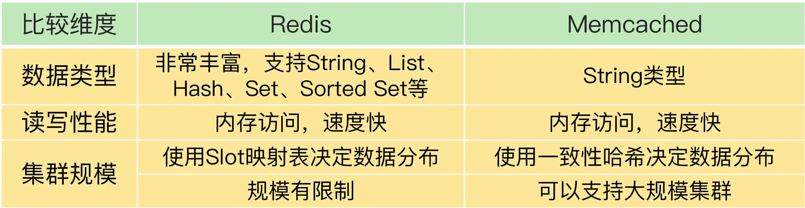
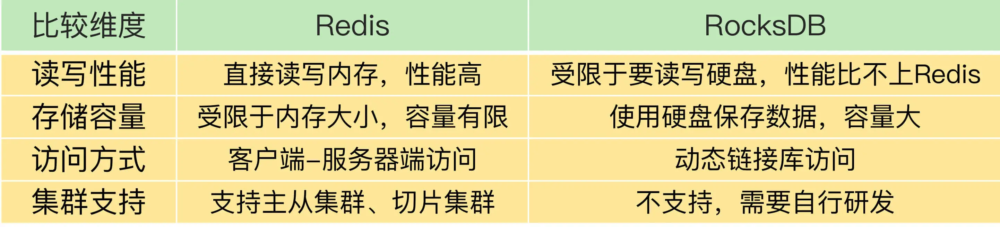

- 00 开篇词 这样学Redis，才能技高一筹.md.html
- 01 基本架构：一个键值数据库包含什么？.md.html
- 02 数据结构：快速的Redis有哪些慢操作？.md.html
- 03 高性能IO模型：为什么单线程Redis能那么快？.md.html
- 04 AOF日志：宕机了，Redis如何避免数据丢失？.md.html
- 05 内存快照：宕机后，Redis如何实现快速恢复？.md.html
- 06 数据同步：主从库如何实现数据一致？.md.html
- 07 哨兵机制：主库挂了，如何不间断服务？.md.html
- 08 哨兵集群：哨兵挂了，主从库还能切换吗？.md.html
- 09 切片集群：数据增多了，是该加内存还是加实例？.md.html
- 10 第1～9讲课后思考题答案及常见问题答疑.md.html
- 11 “万金油”的String，为什么不好用了？.md.html
- 12 有一亿个keys要统计，应该用哪种集合？.md.html
- 13 GEO是什么？还可以定义新的数据类型吗？.md.html
- 14 如何在Redis中保存时间序列数据？.md.html
- 15 消息队列的考验：Redis有哪些解决方案？.md.html
- 16 异步机制：如何避免单线程模型的阻塞？.md.html
- 17 为什么CPU结构也会影响Redis的性能？.md.html
- 18 波动的响应延迟：如何应对变慢的Redis？（上）.md.html
- 19 波动的响应延迟：如何应对变慢的Redis？（下）.md.html
- 20 删除数据后，为什么内存占用率还是很高？.md.html
- 21 缓冲区：一个可能引发“惨案”的地方.md.html
- 22 第11～21讲课后思考题答案及常见问题答疑.md.html
- 23 旁路缓存：Redis是如何工作的？.md.html
- 24 替换策略：缓存满了怎么办？.md.html
- 25 缓存异常（上）：如何解决缓存和数据库的数据不一致问题？.md.html
- 26 缓存异常（下）：如何解决缓存雪崩、击穿、穿透难题？.md.html
- 27 缓存被污染了，该怎么办？.md.html
- 28 Pika：如何基于SSD实现大容量Redis？.md.html
- 29 无锁的原子操作：Redis如何应对并发访问？.md.html
- 30 如何使用Redis实现分布式锁？.md.html
- 31 事务机制：Redis能实现ACID属性吗？.md.html
- 32 Redis主从同步与故障切换，有哪些坑？.md.html
- 33 脑裂：一次奇怪的数据丢失.md.html
- 34 第23~33讲课后思考题答案及常见问题答疑.md.html
- 35 Codis VS Redis Cluster：我该选择哪一个集群方案？.md.html
- 36 Redis支撑秒杀场景的关键技术和实践都有哪些？.md.html
- 37 数据分布优化：如何应对数据倾斜？.md.html
- 38 通信开销：限制Redis Cluster规模的关键因素.md.html
- 39 Redis 6.0的新特性：多线程、客户端缓存与安全.md.html
- 40 Redis的下一步：基于NVM内存的实践.md.html
- 41 第35～40讲课后思考题答案及常见问题答疑.md.html
- 加餐 01 经典的Redis学习资料有哪些？.md.html
- 加餐 02 用户Kaito：我是如何学习Redis的？.md.html
- 加餐 03 用户Kaito：我希望成为在压力中成长的人.md.html
- 加餐 04 Redis客户端如何与服务器端交换命令和数据？.md.html
- 加餐 05 Redis有哪些好用的运维工具？.md.html
- 加餐 06 Redis的使用规范小建议.md.html
- 加餐 07 从微博的Redis实践中，我们可以学到哪些经验？.md.html
- 结束语 从学习Redis到向Redis学习.md.html
- 捐赠
41 第35～40讲课后思考题答案及常见问题答疑
今天是我们最后一节答疑课，我会带你一起分析一下第 35～40 讲的课后思考题。同时，我还会讲解两个典型问题，分别是原子操作使用问题，以及 Redis 和其他键值数据库的对比情况。
第 35 讲
问题：假设 Codis 集群中保存的 80% 的键值对都是 Hash 类型，每个 Hash 集合的元素数量在 10 万~20 万个，每个集合元素的大小是 2KB。你觉得，迁移这样的 Hash 集合数据，会对 Codis 的性能造成影响吗？
答案：其实影响不大。虽然一个 Hash 集合数据的总数据量有 200MB ~ 400MB（2KB * 0.1M ≈ 200MB 到 2KB * 0.2M ≈ 400MB），但是 Codis 支持异步、分批迁移数据，所以，Codis 可以把集合中的元素分多个批次进行迁移，每批次迁移的数据量不大，所以，不会给源实例造成太大影响。
第 36 讲
问题：假设一个商品的库存量是 800，我们使用一个包含了 4 个实例的切片集群来服务秒杀请求，我们让每个实例各自维护库存量 200，把客户端的秒杀请求分发到不同的实例上进行处理，你觉得这是一个好方法吗？
答案：这个方法是不是能达到一个好的效果，主要取决于，客户端请求能不能均匀地分发到每个实例上。如果可以的话，那么，每个实例都可以帮着分担一部分压力，避免压垮单个实例。
在保存商品库存时，key 一般就是商品的 ID，所以，客户端在秒杀场景中查询同一个商品的库存时，会向集群请求相同的 key，集群就需要把客户端对同一个 key 的请求均匀地分发到多个实例上。
为了解决这个问题，客户端和实例间就需要有代理层来完成请求的转发。例如，在 Codis 中，codis proxy 负责转发请求，那么，如果我们让 codis proxy 收到请求后，按轮询的方式把请求分发到不同实例上（可以对 Codis 进行修改，增加转发规则），就可以利用多实例来分担请求压力了。
如果没有代理层的话，客户端会根据 key 和 Slot 的映射关系，以及 Slot 和实例的分配关系，直接把请求发给保存 key 的唯一实例了。在这种情况下，请求压力就无法由多个实例进行分担了。题目中描述的这个方法也就不能达到好的效果了。
第 37 讲
问题：当有数据访问倾斜时，如果热点数据突然过期了，假设 Redis 中的数据是缓存，数据的最终值是保存在后端数据库中的，这样会发生什么问题吗?
答案：在这种情况下，会发生缓存击穿的问题，也就是热点数据突然失效，导致大量访问请求被发送到数据库，给数据库带来巨大压力。
我们可以采用【第 26 讲】中介绍的方法，不给热点数据设置过期时间，这样可以避免过期带来的击穿问题。
除此之外，我们最好在数据库的接入层增加流控机制，一旦监测到有大流量请求访问数据库，立刻开启限流，这样做也是为了避免数据库被大流量压力压垮。因为数据库一旦宕机，就会对整个业务应用带来严重影响。所以，我们宁可在请求接入数据库时，就直接拒接请求访问。
第 38 讲
问题：如果我们采用跟 Codis 保存 Slot 分配信息相类似的方法，把集群实例状态信息和 Slot 分配信息保存在第三方的存储系统上（例如 Zookeeper），这种方法会对集群规模产生什么影响吗？
答案：假设我们将 Zookeeper 作为第三方存储系统，保存集群实例状态信息和 Slot 分配信息，那么，实例只需要和 Zookeeper 通信交互信息，实例之间就不需要发送大量的心跳消息来同步集群状态了。这种做法可以减少实例之间用于心跳的网络通信量，有助于实现大规模集群。而且，网络带宽可以集中用在服务客户端请求上。
不过，在这种情况下，实例获取或更新集群状态信息时，都需要和 Zookeeper 交互，Zookeeper 的网络通信带宽需求会增加。所以，采用这种方法的时候，需要给 Zookeeper 保证一定的网络带宽，避免 Zookeeper 受限于带宽而无法和实例快速通信。
第 39 讲
问题：你觉得，Redis 6.0 的哪个或哪些新特性会对你有帮助呢？
答案：这个要根据你们的具体需求来定。从提升性能的角度上来说，Redis 6.0 中的多 IO 线程特性可以缓解 Redis 的网络请求处理压力。通过多线程增加处理网络请求的能力，可以进一步提升实例的整体性能。业界已经有人评测过，跟 6.0 之前的单线程 Redis 相比，6.0 的多线程性能的确有提升。所以，这个特性对业务应用会有比较大的帮助。
另外，基于用户的命令粒度 ACL 控制机制也非常有用。当 Redis 以云化的方式对外提供服务时，就会面临多租户（比如多用户或多个微服务）的应用场景。有了 ACL 新特性，我们就可以安全地支持多租户共享访问 Redis 服务了。
第 40 讲
问题：你觉得，有了持久化内存后，还需要 Redis 主从集群吗？
答案：持久化内存虽然可以快速恢复数据，但是，除了提供主从故障切换以外，主从集群还可以实现读写分离。所以，我们可以通过增加从实例，让多个从实例共同分担大量的读请求，这样可以提升 Redis 的读性能。而提升读性能并不是持久化内存能提供的，所以，如果业务层对读性能有高要求时，我们还是需要主从集群的。
常见问题答疑
好了，关于思考题的讨论，到这里就告一段落了。接下来，我结合最近收到的一些问题，来和你聊一聊，在进行原子操作开发时，局部变量和全局共享变量导致的差异问题，以及 Redis 和另外两种常见的键值数据库 Memcached、RocksDB 的优劣势对比。
关于原子操作的使用疑问
在【第 29 讲】中，我在介绍原子操作时，提到了一个多线程限流的例子，借助它来解释如何使用原子操作。我们再来回顾下这个例子的代码：
//获取ip对应的访问次数
current = GET(ip)
//如果超过访问次数超过20次，则报错
IF current != NULL AND current > 20 THEN
ERROR "exceed 20 accesses per second"
ELSE
//如果访问次数不足20次，增加一次访问计数
value = INCR(ip)
//如果是第一次访问，将键值对的过期时间设置为60s后
IF value == 1 THEN
EXPIRE(ip,60)
END
//执行其他操作
DO THINGS
END
在分析这个例子的时候，我提到：“第一个线程执行了 INCR(ip) 操作后，第二个线程紧接着也执行了 INCR(ip)，此时，ip 对应的访问次数就被增加到了 2，我们就不能再对这个 ip 设置过期时间了。”
有同学认为，value 是线程中的局部变量，所以两个线程在执行时，每个线程会各自判断 value 是否等于 1。判断完 value 值后，就可以设置 ip 的过期时间了。因为 Redis 本身执行 INCR 可以保证原子性，所以，客户端线程使用局部变量获取 ip 次数并进行判断时，是可以实现原子性保证的。
我再进一步解释下这个例子中使用 Lua 脚本保证原子性的原因。
在这个例子中，value 其实是一个在多线程之间共享的全局变量，所以，多线程在访问这个变量时，就可能会出现一种情况：一个线程执行了 INCR(ip) 后，第二个线程也执行了 INCR(ip)，等到第一个线程再继续执行时，就会发生 ip 对应的访问次数变成 2 的情况。而设置过期时间的条件是 ip 访问次数等于 1，这就无法设置过期时间了。在这种情况下，我们就需要用 Lua 脚本保证计数增加和计数判断操作的原子性。
Redis 和 Memcached、RocksDB 的对比
Memcached 和 RocksDB 分别是典型的内存键值数据库和硬盘键值数据库，应用得也非常广泛。和 Redis 相比，它们有什么优势和不足呢？是否可以替代 Redis 呢？我们来聊一聊这个问题。
Redis 和 Memcached 的比较
和 Redis 相似，Memcached 也经常被当做缓存来使用。不过，Memcached 有一个明显的优势，就是它的集群规模可以很大。Memcached 集群并不是像 Redis Cluster 或 Codis 那样，使用 Slot 映射来分配数据和实例的对应保存关系，而是使用一致性哈希算法把数据分散保存到多个实例上，而一致性哈希的优势就是可以支持大规模的集群。所以，如果我们需要部署大规模缓存集群，Memcached 会是一个不错的选择。
不过，在使用 Memcached 时，有个地方需要注意，Memcached 支持的数据类型比 Redis 少很多。Memcached 只支持 String 类型的键值对，而 Redis 可以支持包括 String 在内的多种数据类型，当业务应用有丰富的数据类型要保存的话，使用 Memcached 作为替换方案的优势就没有了。
如果你既需要保存多种数据类型，又希望有一定的集群规模保存大量数据，那么，Redis 仍然是一个不错的方案。
我把 Redis 和 Memcached 的对比情况总结在了一张表里，你可以看下。

Redis 和 RocksDB 的比较
和 Redis 不同，RocksDB 可以把数据直接保存到硬盘上。这样一来，单个 RocksDB 可以保存的数据量要比 Redis 多很多，而且数据都能持久化保存下来。
除此之外，RocksDB 还能支持表结构（即列族结构），而 Redis 的基本数据模型就是键值对。所以，如果你需要一个大容量的持久化键值数据库，并且能按照一定表结构保存数据，RocksDB 是一个不错的替代方案。
不过，RocksDB 毕竟是要把数据写入底层硬盘进行保存的，而且在进行数据查询时，如果 RocksDB 要读取的数据没有在内存中缓存，那么，RocksDB 就需要到硬盘上的文件中进行查找，这会拖慢 RocksDB 的读写延迟，降低带宽。
在性能方面，RocksDB 是比不上 Redis 的。而且，RocksDB 只是一个动态链接库，并没有像 Redis 那样提供了客户端 - 服务器端访问模式，以及主从集群和切片集群的功能。所以，我们在使用 RocksDB 替代 Redis 时，需要结合业务需求重点考虑替换的可行性。
我把 Redis 和 RocksDB 的对比情况总结了下，如下表所示：

总结
集群是实际业务应用中很重要的一个需求，在课程的最后，我还想再给你提一个小建议。
集群部署和运维涉及的工作量非常大，所以，我们一定要重视集群方案的选择。
集群的可扩展性是我们评估集群方案的一个重要维度，你一定要关注，集群中元数据是用 Slot 映射表，还是一致性哈希维护的。如果是 Slot 映射表，那么，是用中心化的第三方存储系统来保存，还是由各个实例来扩散保存，这也是需要考虑清楚的。Redis Cluster、Codis 和 Memcached 采用的方式各不相同。
- Redis Cluster：使用 Slot 映射表并由实例扩散保存。
- Codis：使用 Slot 映射表并由第三方存储系统保存。
- Memcached：使用一致性哈希。
从可扩展性来看，Memcached 优于 Codis，Codis 优于 Redis Cluster。所以，如果实际业务需要大规模集群，建议你优先选择 Codis 或者是基于一致性哈希的 Redis 切片集群方案。
© 2019 - 2023 Liangliang Lee. Powered by gin and hexo-theme-book.